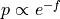
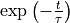

Error estimation
With a few extra keyword arguments added to the routines for constructing 1D/2D histograms, we can include an estimation of the error bar, which is then automatically propagated to free energy profiles/surfaces constructed using the from_histogram routines. Four methods are distinguished:
mle_p: Estimating the error directly for the probability of each bin in the histogram. This method does not explicitly impose the positivity of the probability.
mle_p_cov: Estimate the full covariance matrix for the probability of all bins in the histogram. In other words, appart from the error on the probability/free energy of a bin itself, we now also account for the covariance between the probabilty/free energy of the bins. This method does not explicitly impose the positivity of the probability.
mle_f: Estimating the error for minus the logarithm of the probability, which is proportional to the free energy (hence f in mle_f). As the probability is expressed as , its positivity is explicitly accounted for.
mle_f_cov: Estimate the full covariance matrix for minus the logarithm of the probability of all bins in the histogram. In other words, appart from the error on the probabilty/free energy of a bin itself (including explicit positivity constraint), we now also account for the covariance between the probability/free energy of the bins.
Warning
It is strongly discouraged to use the mle_p versions. This is because the lack of explicit positivity constraints results in a method that is only accurate if the error on the probability is much smaller than the mean probability itself. Using mle_p when the error is larger might give rise to weird situations where the 95% confidence interval include negative probabilities. The mle_f methodology, on the other hand, will always result in error bars/confidence intervals for the probability that are entirely above 0.
The method can be chosen using the error_estimate keyword of the from_single_trajectory and from_wham routines in the Histogram1D/Histogram2D classes. If a histogram was constructed with error estimation and afterwards converted to a free energy profile using the from_histogram routines, the error bar will be propagated to the free energy profile. If a histogram or free energy profile with error estimate is plotted, the error bar will be visualized as a shaded area. This error bar is computed as a 2-sigma error bar corresponding to a 95% confidence interval.
Without correlations
In case the samples used to generate the histogram (i.e. the trajectory data) are fully uncorrelated, one can directly estimate the error bar by only setting the appropriate error_estimate keyword as is shown below:
#Example to read CV trajectory
from thermolib.thermodynamics.trajectory import ColVarReader
reader = ColVarReader([0])
cv_data = reader('traj.xyz')
#construct free energy profile with error estimation
from thermolib.thermodynamics.histogram import Histogram1D
from thermolib.thermodynamics.fep import BaseFreeEnergyProfile
bins = np.arange(-1.55, 1.55, 0.05)
hist = Histogram1D.from_single_trajectory(cv_data, bins, error_estimate='mle_f')
fep = BaseFreeEnergyProfile.from_histogram(hist, temp)
With correlations
However, whenever samples are correlated (as is the case when each subsequent step of a molecular dynamics simulation is used for the trajectory data), we first have to estimate the correlation time for each trajectory used and feed it to e.g. the ThermoLIB from_wham routines. This can be done by means of constructing the auto correlation function (acf) and fit a simple exponential decay to it as implemented in the decorrelate routine. The following code illustrates its use:
#code to read in trajectories from wham input file as explained before
from thermolib.thermodynamics.trajectory import ColVarReader
from thermolib.tools import read_wham_input
colvar_reader = ColVarReader([0])
temp, bias, traj = read_wham_input('wham_input.txt', colvar_reader, 'colvars/COLVAR_%s.dat')
#code to compute correlation times
corrtimes = decorrelate(traj, plot=True)
Setting plot=True will automatically generate a plot of the correlation time for each of the trajectories present in traj.
Note
If you would like to further investigate the extraction of the correlation time from the fit to the autocorrelation time (e.g. if you suspect that something might have gone wrong because the correlation times are 1 for each trajectory), you can do so for a single trajectory by means of the corrtime_from_acf routine, which is the routine that is called by the decorrelate routine for each trajectory. To do this, you can use the code below which will do the fit for first trajectory in traj
corrtime = corrtime_from_acf(traj[0], fn_plot='acf.pdf')
This plot could look as follows:

The shaded black area is resulting from very high frequency atomic oscillations (which may be absent in your plot if the trajectory comes from an MD simulation with a much larger time step, or when you only dumped the trajectory every so many time steps). Important in this plot is that the solid red line represents the enveloppe of the black area and hence has the purpose to eliminate these rapid oscillations. The dashed red line is the result of a fit of a simple exponential decay (i.e. ) to the solid red line. The computation of the correlation time (which is actually the integrated correlation time or  ) was done well if the dashed line adequately follows the general trent of the solid line in the initial decay.
) was done well if the dashed line adequately follows the general trent of the solid line in the initial decay.
Important
More details on what could go wrong with computing the autocorrelation time and how to solve it using the n_nested_envolopes and p0 keyword arguments are given in the tutorial notebook on Advanced techniques in error estimation.
Once you have the correlation times, you can then also parse them to the from_wham routins so that it can take it into account for making a more reliable estimation of the error bars. This is done as follows:
from thermolib.thermodynamics.histogram import Histogram1D
from thermolib.thermodynamics.fep import BaseFreeEnergyProfile
bins = np.arange(-1.55, 1.55, 0.05)
hist = Histogram1D.from_wham(bins, traj, bias, temp, error_estimate='mle_f', corrtimes=corrtimes)
fep = BaseFreeEnergyProfile.from_histogram(hist, temp)